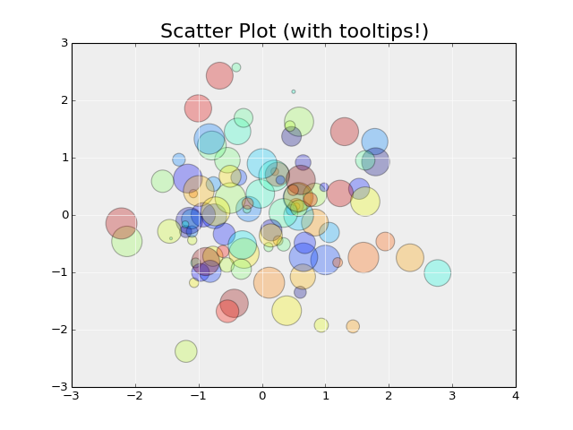
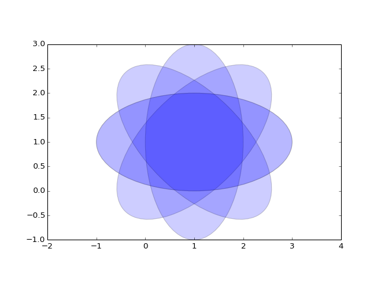
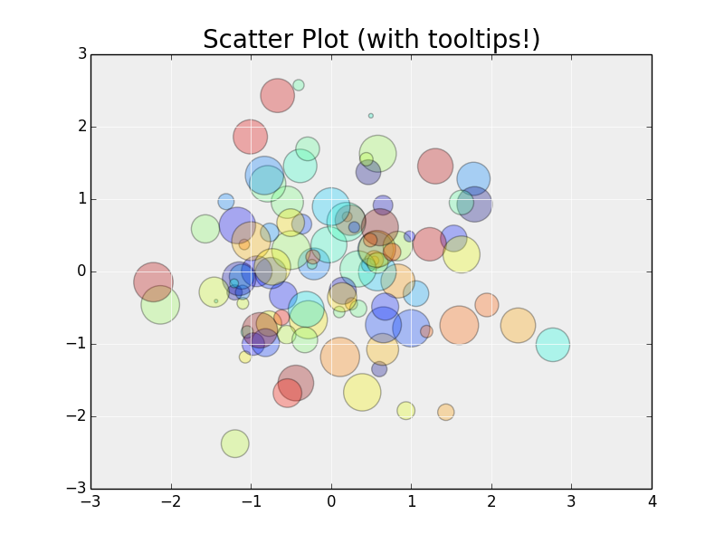
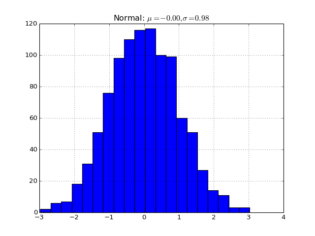

apyfile module¶
- apyfile.funci(x)¶
Here is something new Hallo hallo. I am a docstring!
You can represent code blocks fairly easily:
import numpy as np x = np.random.rand(12) print x

Note
Michse beautiful you too
See also
This is a simple seealso note.
Warning
never use me!
Todo
This is a todo!
""" Scatter Plot With Tooltips ========================== A scatter-plot with tooltip labels on hover. Hover over the points to see the point labels. Use the toolbar buttons at the bottom-right of the plot to enable zooming and panning, and to reset the view. """ import matplotlib.pyplot as plt import numpy as np import mpld3 fig, ax = plt.subplots(subplot_kw=dict(axisbg='#EEEEEE')) N = 100 scatter = ax.scatter(np.random.normal(size=N), np.random.normal(size=N), c=np.random.random(size=N), s=1000 * np.random.random(size=N), alpha=0.3, cmap=plt.cm.jet) ax.grid(color='white', linestyle='solid') ax.set_title("Scatter Plot (with tooltips!)", size=20) labels = ['point {0}'.format(i + 1) for i in range(N)] tooltip = mpld3.plugins.PointLabelTooltip(scatter, labels=labels) mpld3.plugins.connect(fig, tooltip) plt.savefig("E:/IPython2/141007 Sphinx and ShapelyChipDesigns/try4/docs/pyplots/img/scatter_plot.png") plt.savefig("scatter_plot.png") mpld3.save_html(fig, "E:/IPython2/141007 Sphinx and ShapelyChipDesigns/try4/docs/pyplots/img/scatter_plot.html") #mpld3.save_html(fig, "E:/IPython2/141007 Sphinx and ShapelyChipDesigns/try4/docs/_build/html/_images/scatter_plot.html") mpld3.save_html(fig, "E:/IPython2/141007 Sphinx and ShapelyChipDesigns/try4/docs/pyplots/scatter_plot.html") mpld3.save_html(fig, "scatter_plot.html") mpld3.save_html(fig, "_img/scatter_plot.html")
(Source code, png, hires.png, pdf)
Full path:
“pyplots/img/scatter_plot.html”
”../pyplots/img/scatter_plot.html”
”../../pyplots/img/scatter_plot.html
”../../../src/_img/scatter_plot.html
>>> import math >>> print math.sqrt(2.) 1.41421356237
from pylab import xlim, ylim, arange, subplot, show from matplotlib.patches import Ellipse delta = 45.0 # degrees angles = arange(0, 360+delta, delta) ells = [Ellipse((1, 1), 4, 2, a) for a in angles] a = subplot(111, aspect='equal') for e in ells: e.set_clip_box(a.bbox) e.set_alpha(0.1) a.add_artist(e) xlim(-2, 4) ylim(-1, 3) show()
(Source code, png, hires.png, pdf)
""" Image with Mouse Position ========================= This example shows how mpld3 can display images using plt.imshow(). It also includes the mouse position plugin, so that the mouse coordinates are displayed in the lower-right corner. """ import matplotlib.pyplot as plt import numpy as np import mpld3 from mpld3 import plugins fig, ax = plt.subplots() x = np.linspace(-2, 2, 20) y = x[:, None] X = np.zeros((20, 20, 4)) X[:, :, 0] = np.exp(- (x - 1) ** 2 - (y) ** 2) X[:, :, 1] = np.exp(- (x + 0.71) ** 2 - (y - 0.71) ** 2) X[:, :, 2] = np.exp(- (x + 0.71) ** 2 - (y + 0.71) ** 2) X[:, :, 3] = np.exp(-0.25 * (x ** 2 + y ** 2)) im = ax.imshow(X, extent=(10, 20, 10, 20), origin='lower', zorder=1, interpolation='nearest') fig.colorbar(im, ax=ax) ax.set_title('An Image', size=20) plugins.connect(fig, plugins.MousePosition(fontsize=14)) mpld3.display(fig)
In [69]: lines = plot([1,2,3]) In [70]: setp(lines) alpha: float animated: [True | False] antialiased or aa: [True | False] ...snip
You can also inline code for plots directly, and the code will be executed at documentation build time and the figure inserted into your docs; the following code:
.. plot:: import matplotlib.pyplot as plt import numpy as np x = np.random.randn(1000) plt.hist( x, 20) plt.grid() plt.title(r'Normal: $\mu=%.2f, \sigma=%.2f$'%(x.mean(), x.std())) plt.show()
Produces this output:
(Source code, png, hires.png, pdf)
- Lalal:
- import matplotlib.pyplot as plt
- import numpy as np x = np.random.randn(1000) plt.hist( x, 20) plt.grid() plt.title(r’Normal: $mu=%.2f, sigma=%.2f$’%(x.mean(), x.std())) plt.show()
{kind=link}
{kind=link}
{kind=link}
{kind=link}
{kind=link}
{kind=link}